Wenjie Yang杨雯捷
UX / Product EngineerAgent / AIGC builder
让想法，成为更好的体验。
具备视觉设计与用户研究背景，实践覆盖 ToB / ToC 交互设计。参与 Agent 与画布工具设计开发，用原型与 MVP 验证真实工作流。
作品选集设计 · 产品 · 影像
作品与实践
从洞察出发。
让体验发生。
项目界面与获奖记录，在这里展开。
移动探索，让作品显影轻触或滑过，点亮作品
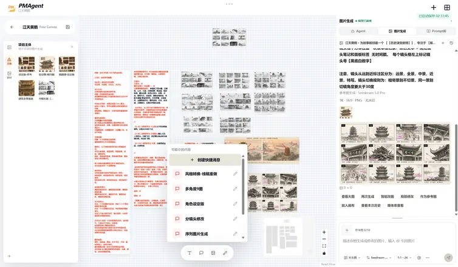
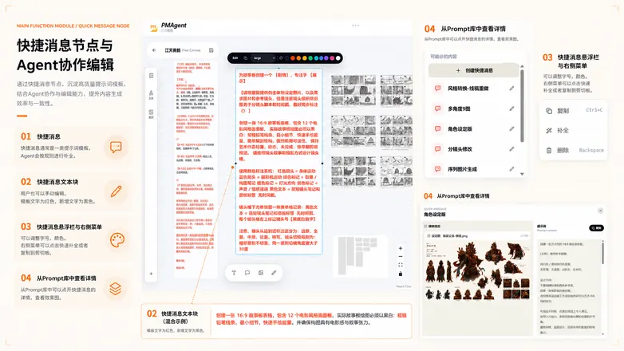
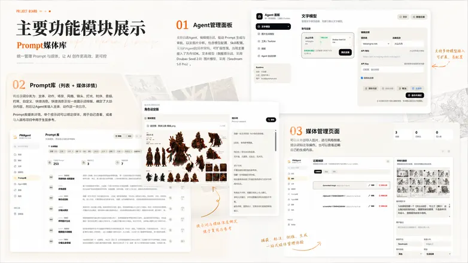
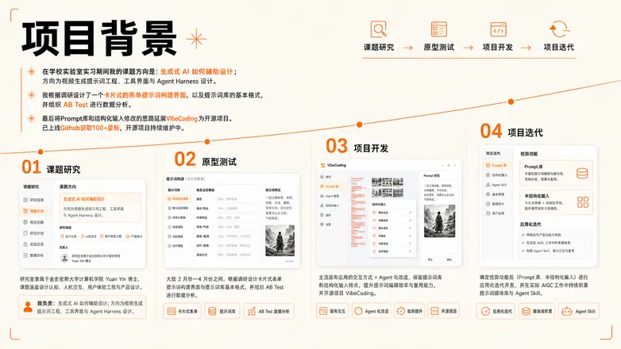
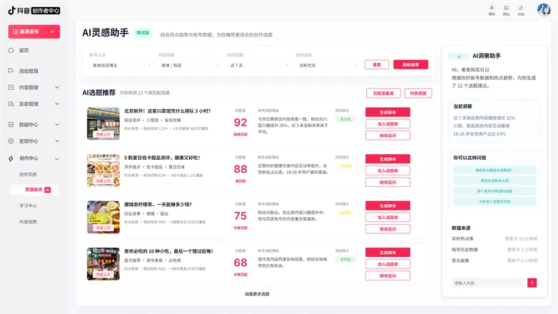
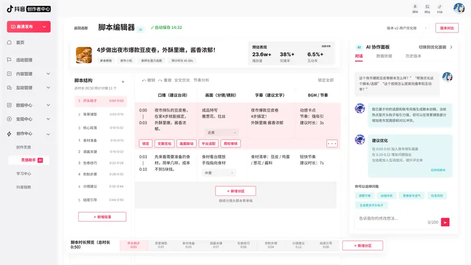
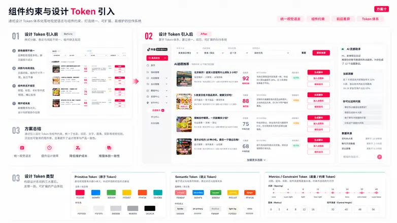
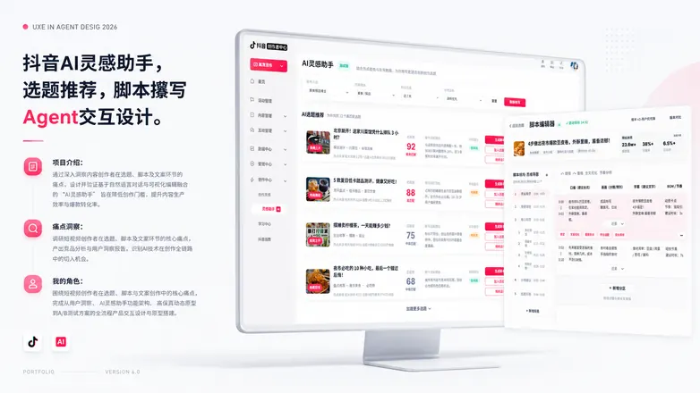
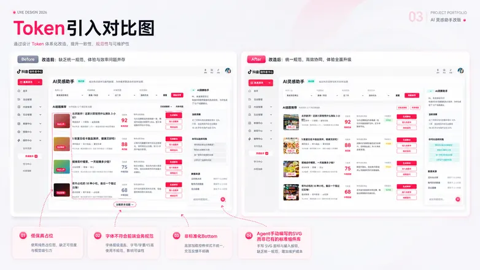
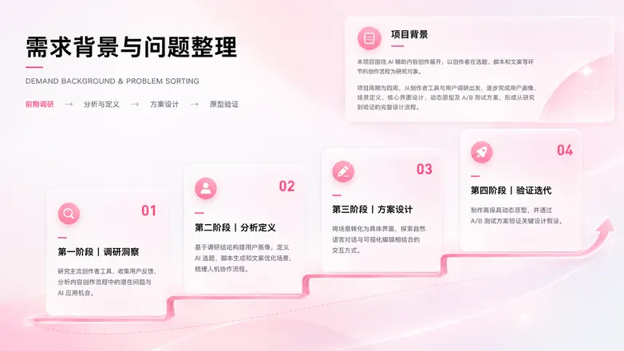
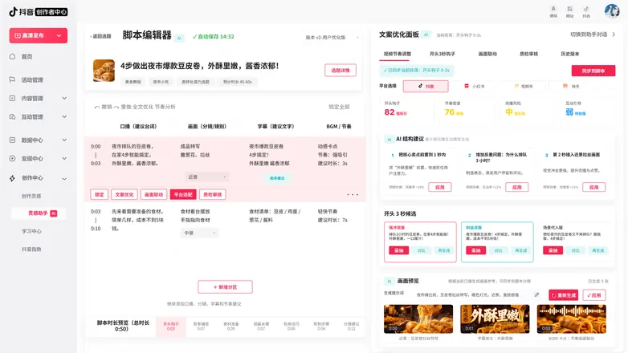
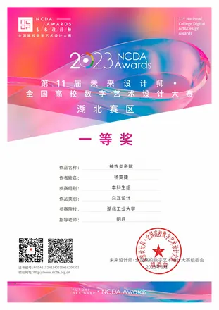
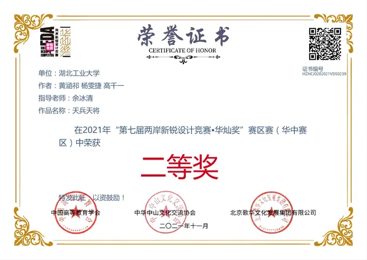
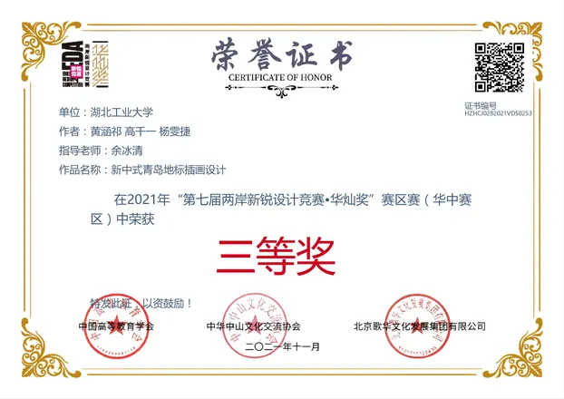
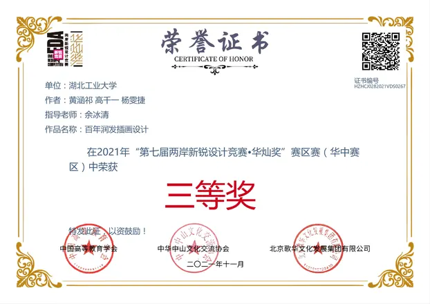
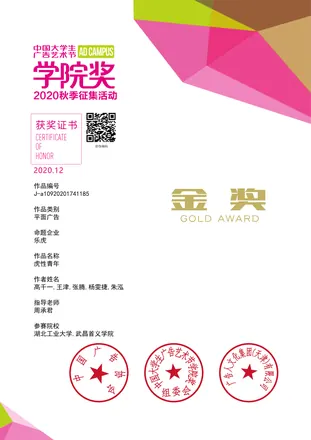
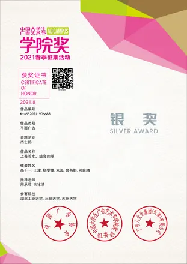
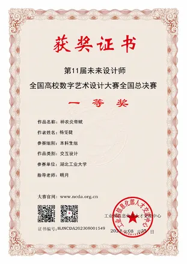

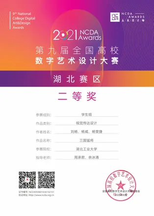
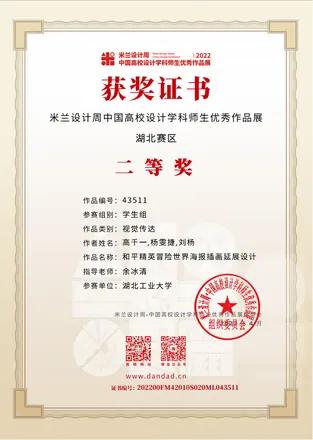
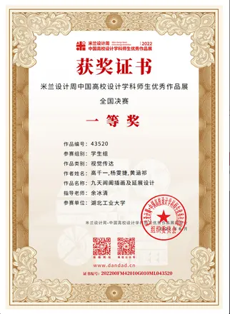
精选作品
两项代表作，关于体验判断与产品落地。
ALSO BUILDING
查看项目 DubbingRoom
音色、角色与情绪，连接成一条本地 AI 配音工作流。
STAY CURIOUS.
关于我
设计是我的视角。
好奇是我的习惯。
我有长期的平面设计与手绘积累，也参与用户研究、交互设计和组件库搭建。设计时，我关注信息层级、视觉细节，以及真实任务中的使用体验。
通过原型验证、方案评审和设计走查，我把问题转化为可交付的方案，并与产品、研发持续协作推进落地。
工作 · 实践 · 教育
经历与教育
WORK & INTERNSHIPS工作与实习经历
2026.09 — 至今小米汽车用户体验设计师 · 大研发数字化部门
工厂一体化大压铸智能生产系统
参与工厂一体化智能压铸岛系统的体验迭代，围绕缺陷识别、人工复检、数据上报及 AI 辅助调参场景，优化生产数据流转、主副屏交互及 AI Agent 人机协同流程。
- 痛点洞察结合产线现场调研与既有系统设计走查，梳理缺陷检测—人工复检—数据归档—工艺调参业务链路，识别异常反馈断链、参数变更难追溯等问题，输出设计走查文档及流程优化方案。
- 架构设计优化缺陷识别上报数据流程与主副屏信息架构，围绕监测点位迭代异常分级、AI 诊断展示及采纳 / 忽略反馈交互，完善异常处置闭环。
- 交互验证交付 Figma 高保真页面、业务 / 交互流程图及设计规范，协同产品、研发完成方案评审与设计走查。
- 落地迭代参与 AI 小苏参数差异推送、临时变更登记及设备复原反馈流程优化，推动参数变更追溯相关功能开发上线并完成验收。
2026.04 — 2026.05字节跳动用户体验设计师 · 智能创作研发部
抖音创作者中心 AI 灵感助手
围绕内容创作者在选题、脚本及文案环节的痛点，设计并验证融合自然语言对话与可视化编辑的「AI 灵感助手」，旨在降低创作门槛，提升内容生产效率与爆款转化率。
- 痛点洞察调研短视频创作者的核心痛点，产出竞品分析与用户洞察报告，识别 AI 技术在创作全链路中的切入机会。
- 架构设计设计从选题推荐到结构化脚本的全流程交互，并针对成长型与专业型画像制定差异化设计策略。
- 交互验证利用 HTML 和 Figma 构建高保真动态原型，模拟 AI 对话、分镜编辑及内容生成状态；最终设计 3 个核心页面、40+ 交互变体及 HTML 交互 Demo。
- 方案实验策划 A/B 测试方案，对比卡片式与列表式推荐，以选题采纳率与转化率作为评估指标。
2026.01 — 2026.09金史密斯智能创新与认知实验室实习研究员、TA 助教 · AIxDesign
生成式 AI 如何辅助设计
实验室隶属于金史密斯大学计算机学院 Yuan Yin 博士，研究课题涵盖设计认知、人机交互、用户体验工程和产品设计。我负责生成式 AI 辅助设计课题，方向为图片 / 视频生成的提示词工程、工具界面与 Agent Harness 设计。
- 研究与验证阅读技术文献，调研主流 Agent 与 AIGC 应用的交互架构和产品趋势；提出交互方案，制作功能原型，组织 A/B 测试并进行数据分析。
- 流程评估关注 Agent 在任务流程中的交互逻辑、执行稳定性与可复现性，设计 A/B 测试、自动化测试和任务集进行评估。
- 个人开源项目负责 PMAgent-Canvas 图片生成 Agent 与自由画布工具、DubbingRoom 本地 AIGC 配音应用的交互设计与开发；基于开源 TTS 模型探索音色、角色、情绪与批量配音工作流，配音应用持续迭代中。
OTHER PRACTICE其他专业实践
2022.09 — 2023.05荆门圣境花谷 3A 景区UI 设计、IP 设计 · 专业落地项目
景区 IP 文化及小程序延展开发
基于真实景区荆门市圣境山进行 IP 开发与小程序搭建，负责 UI 设计和 IP 设计。设计 IP 形象，手绘基于景区特色和季节的 4 个主要场景及 Icon。
最终交付 4 个主要场景、10+ 页面 UI、40+ Icon、IP 形象及延展物料。项目真实上线，获得互联网+创业大赛校级奖项与学校创业园扶持。
2021.09 — 2024.06镜迁工作室自媒体运营、合作设计师
平面设计工作室与自媒体运营
与同校同学合作运营自媒体与设计工作室，长期合作伙伴为淘宝九朵玫瑰婚庆店。
EDUCATION教育经历
2025.09 — 2027.01伦敦大学金史密斯学院计算机系 · 用户体验工程 MSc
用户体验工程理学硕士，留服认证专业为计算机科学与技术。均分 67.5/100，换算 GPA 3.7/4.0。
主要课程：计算机与用户体验、人工智能用户体验、交互科学、用户体验研究方法、人因工程。
2019.09 — 2023.06湖北工业大学艺术设计学院 · 视觉传达学士
视觉传达设计本科，GPA 3.62。获优秀毕业生、院级优秀学生、校级二等奖学金及学生会优秀干事。
主要课程：设计心理学、版式设计、UI 设计、产品设计。
更多创作
兴趣，也有引力。
竞赛经历 / AIGC 视频创作 / 游戏策划 & 开发
收起探索
更多创作
兴趣，也有引力。
竞赛经历 / AIGC 视频创作 / 游戏策划 & 开发
01 / 竞赛与设计TO BE CONTINUED
在挑战里，打开思路。
竞赛经历与团队创作，记录作品之外的过程。
竞赛经历 ↗02 / AIGC 影像让想象，长出画面。
从分镜到生成，从音效到剪辑，探索影像的另一种语言。
查看创作记录 ↗游戏策划 & 开发
下一片探索的空间。更多创作记录，持续整理中。